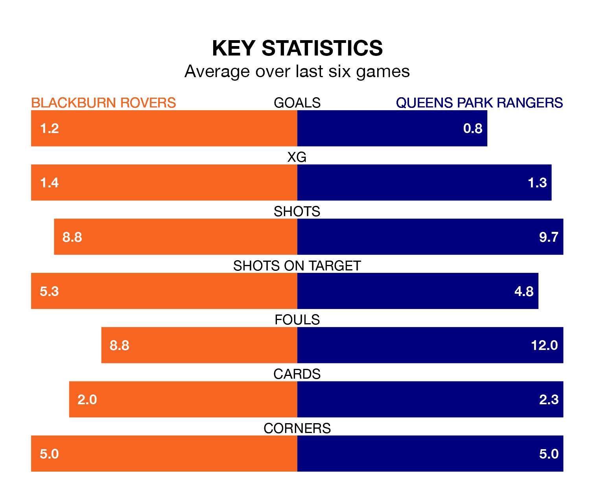

Blackburn Rovers are on a terrible run ahead of hosting Queens Park Rangers at Ewood Park on Saturday, with just two points collected from their last six games.
Blackburn have picked up two draws and four losses in their last six EFL Championship games, and face a QPR side whose last six games have brought one win and two draws.
In Samuel Szmodics, Blackburn have the league's sharpest shooter so far this season. He has notched 16 goals in 26 appearances.
QPR's top scorers, with four goals each, are Lyndon Dykes and Kenneth Paal.
Rangers are 22nd in the table after 29 games, of which they have won six and drawn seven, earning 25 points.
Rovers are four places ahead of the visitors in 18th, with 10 wins and three draws putting them on 33 points.
In the last 10 years, Blackburn and QPR have played each other on 17 occasions. Blackburn won 11 of them, QPR three, and they drew three times.
On average, Blackburn scored 1.6 goals and QPR 0.9 in those matches.
Their last meeting was on October 7, when Blackburn won 4-0 away.
With 25 goals in 29 games so far this season, QPR are the league's joint-third-lowest scorers with 0.9 goals per game. And they are conceding at an average rate, letting in 40 goals at a rate of 1.4 per game.
The home side, meanwhile, are above average scorers, with 1.5 goals per game, compared to a league average of 1.4. They have conceded 1.9 goals per game.
Blackburn's last match was on January 20, a 1-1 draw against Huddersfield Town, with Adam Wharton getting the goal for Blackburn.
QPR drew 1-1 with Huddersfield Town last time out, on Sunday, with Paal on the scoresheet.
Saturday's match will be refereed by Geoff Eltringham, who has taken charge of 11 EFL Championship games so far this season, issuing no red cards and booking 47 players. He has not awarded any penalties.
The last QPR game Eltringham refereed was the 0-0 draw at home against Bristol City on November 11. He is yet to oversee a match featuring Blackburn this season.
Updated: 15:45 (UTC), 02/02/24